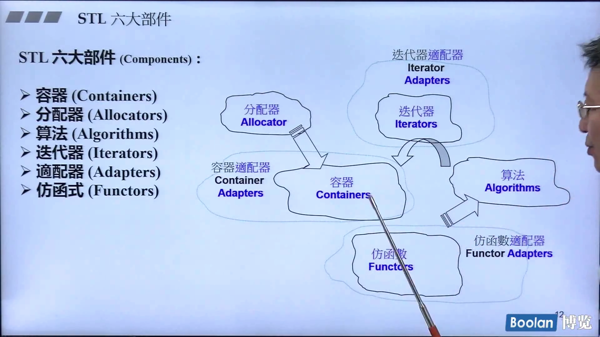

README
CPP学习笔记
基于类（对象）
-
类是数据和数据的处理函数的一种组织形式。
-
类的设计要点（优先考虑数据的设计）：
-
类Header 和 类Body
-
类分为无指针类，和有指针类（拷贝构造，delete []等）
-
构造函数无返回值，尽量使用构造参数列表形式。
- 拷贝构造：String(const String& str)
- 拷贝赋值：String& operator=(const String& str) || return *this
- 委托构造
-
函数构造需要考虑（名称-参数（类型，权限）-返回值（类型，权限））：
- 函数分为类内函数和全局函数（const 放在 成员函数上，不放在全局函数上）
- 参数类型，仅可能的使用引用传递
- 考虑是否使用const 修饰入参
- 返回值尽可能使用引用返回
- 考虑返回值是否使用const
-
static
- 静态函数只能处理静态数据
- static 数据只有一份：instance
-
面向对象
- 复合 （内存 has a， Container / Component）
- 构造由内到外
- 析构由外到内
- 委托（复合 by reference，Handle / Body）
- 共享，引用计数
- 继承（is a，子类中有一部分父类的信息，继承数据，继承函数的调用权）
- 构造由内（父类）而外
- 析构由外而内
- 虚函数（virtual）
- 非虚函数：override 不希望子类重写
- 虚函数：希望子类override 重写，已经有默认实现
- 纯虚函数：子类必须override vitual func = 0;，没有默认实现
- 虚指针 && 虚表（静态绑定-- call某个地址 ｜ 动态--绑定看调用方，多态）
- 一定是指针调用触发 虚链路（多态）
- 三个条件：指针，虚函数，向上转型
1 零散
转换函数
explict（明白的，明确的）
- non-explict-one-argument ctor
Pointer-likeClass（智能指针，迭代器）
Function-likeClass（仿函数）
类模板
- 使用时指定类型
函数模板
成员模板
模板特化（全/偏特化-范围｜个数缩小）
模板模板参数
数量不定的模板参数：typename... Types：sizeof...(args)
auto（编译时推理）
- 声明时需要定义
ObjectModel
- 虚指针（vptr）
- 虚表（vtbl）
STL

容器（Container）
前闭后开
结构与分类
- 序列容器
- Array(固定空间)
- Vector
- Deque
- List
- Forward-List（单向链表）
- 关联容器（key:value）
- Set/Multiset
- Unordered Set/Multiset
- Map/Multimap
- Unordered Map/Multimap
- Set/Multiset
List
- 双向链表
- 迭代器是class，
Vector
- 2倍动态增长
- 不能原地扩充
- 迭代器是原始指针
Deque
- 分段Buffer
- 双向扩充
- begin
- end
- iterator
- cur
- first
- end
- node
分配器（Allocators）
- VC6 的分配器没有特殊设计，调用的是 malloc和free
- BC5 的分配器也没有特殊设计
- GCC
- <stl_alloc.h>
算法（Algorithms）
- 所有的算法，最终的行为无非就是比大小。
- 算法问迭代器问题
1. 算法是一个函数模板
- 从语言层次来讲，算法是一个函数模板
- 其余部件都是一个类模板
2. 处理迭代器
3. 实例
- accumulate（累计）
- for_each
- replace
- replace_if
- replace_copy
- count
- count_if
- find
- find_if
- sort
- binary_search
迭代器（Iterators）

1. 五种相关类型
- iterator_category （分类）
- distance（两个iterator之间的距离的类型）
- value_type（数据类型）
- reference
- pointer
2. traits（中间层）
- 用于封装原生指针，用以实现上述五种类型的数据。
3. 接口
| 名称 | 初始化 | 前 | 后 | 首元素 | 尾元素 | 随机 | 随机查询 | 大小 | 容积 | 反转 | 重设大小 |
|---|---|---|---|---|---|---|---|---|---|---|---|
| array | [push|pop]_back | front | back | []/insert/erase | [].data | size | capacity | ||||
| vector | vector | [push|pop]_back | reserve | ||||||||
| stack | pop | push | top | size | |||||||
| queue | push | pop | front | back | Size | ||||||
| deque | [push|pop]_front | [push|pop]_back | front | back | insert/erase | size | resize | ||||
| Forward-list | [push|pop]_front | front | back | insert/erase | resize | ||||||
| list | [push|pop]_front | [push|pop]_back | |||||||||
| set/mutiset | insert/erase | Size | |||||||||
| map/multimap | insert/erase | ||||||||||
| string | |||||||||||
| tuple |
适配器（Adapters）
- 容器的适配器
- stack
- queue
- 函数适配器
- bind2nd
- binder2nd
- nto1（取反）
- bind2nd
- 新形式的适配器
- bind
仿函数（Functors）
- STL 的仿函数必须public继承binary_function或者unary_function之后才能被适配器适配
1. 算术类（+/-）
2. 逻辑运算类（&& ||）
3. 相对关系类( < | >=)
4. binary_function:（两个操作数）
5. unary_function（一个操作数）
标准库其他
Thread
一、主要函数
#include <pthread.h>
int pthread_create(pthread_t *thread, const pthread_attr_t *attr, void *(*start_routine)(void *), void *arg)
int pthread_join(pthread_t thread, void **value_ptr)
# ps -Lf pid
int pthread_cancel(pthread_t thread)
int pthread_detach(pthread_t thread)
void pthread_exit(void *value_ptr)
int pthread_kill(pthread_t thread, int sig)
int pthread_once(pthread_once_t *once_control, void (*init_routine)(void))
pthread_t pthread_self(void)
pthread_equal(tid1, tid2)
二、具体功能
2.1 线程的创建
2.2 线程的中止
2.2.1 异常终止
- 主线程退出，子线程被强行终止
- 子线程中调用 exit()，则整个进程全部退出
- 缺省行为是终止程序的信号，会终止整个进程
2.2.2 正常终止
- 线程使用 return 返回，return 0 无需转换，return (void*) 1; 返回值是线程的结束码。
- 线程可以被同一进程的其他线程调用 pthread_cancel() 结束。
- 在线程中调用 pthread_exit((void*)1) 退出
2.3 线程的参数传递
- 线程创建顺序和线程运行顺序并不保证一致。
- 全局变量不能代替线程的参数传递
- 参数需要类型类型强制转换
- 传递整型参数
- pthread_create(&pid, NULL, func, (void*)(long) number))
- printf("%d", (int)(long)arg)
- 传递地址参数(需要给每个线程传递一个单独的地址，不能使用同一个地址：全局变量)
- int* var1 = new int; *var = 1;
- pthread_create(&pid, NULL, func, var1))
- printf("%xx", *(int*)arg)
- var1 需要在线程中释放内存。 delete (int*)arg;
- 线程退出状态
- void* pv = 0;
- pthread_join(pid, &pv);
- pv 保存线程 返回的值。
2.4 线程资源的回收
- 线程分离
- joinable(默认状态)，在线程结束时，之后不会释放全部的资源，而是等待join，join之后资源才会释放（因此只能join一次）
- pthread_join()
- pthread_tryjoin_np()
- pthread_timedjoin_np()
- unjoinable（不可分离）
- pthread_detach(tid);
- 可以放在线程函数中 pthread_detach(pthread_self());
- 创建线程前，调用pthread_attr_setdetachstat()设置线程属性。
- pthread_detach(tid);
- joinable(默认状态)，在线程结束时，之后不会释放全部的资源，而是等待join，join之后资源才会释放（因此只能join一次）
- 线程清理函数释放资源
- pthread_cleanup_push(func)
- pthread_cleanup_pop(1)
- 填 0 标识 只退出不执行清理函数
- 非 0 则会退出并执行清理函数
- 可以有多个线程清理函数，但必须push和pop成对在同一语句块中出现
- 在线程退出时 会调用线程清理函数。
- pthread_exit()
- return
- Pthread_cancel()
2.5 线程取消
- 可以被join
- 返回值 为 PTHREAD_CANCELED ，即 -1
- pthread_setcancelstate() 设置线程的取消状态
- 只能放在线程的主函数中
- 可以被取消
- 不可以被取消
- pthread_setcacheltype() 设置线程的取消类型
- 立即取消
- 执行到 取消点是进行取消（默认）
- accept()
- close()
- pthread_testcancel()； 设置取消点
2.6 线程与信号
- 在多线程程序中，外部向进程发送信号不会中断系统调用
- 在多线程程序中，信号的处理是所有线程共享的
- 进程中的信号可以送达单个线程，会中断系统调用
- pthread_kill(tid, sig)
- 如果某个线程因为信号被终止，则整个进程都会被终止
2.7 线程安全
- 原子性，可见行，顺序性
- volatile
- 不从缓存中读取数据，而是从内存中读取
- 禁止代码重排序
- 不是原子的
- volatile
- 原子操作
- 原子操作函数
- CAS执行
- 原子类型 std::atomic<int> var;
- 线程同步锁
2.8 线程同步
2.8.1 互斥锁
- 加锁解锁，其他等待
- mutex
2.8.2 自旋锁
- 加锁解锁，其他不等待
- spin
- 共享标志
2.8.3 读写锁
- 读模式加锁（可以多个持有读锁）
- 写模式加锁（只有不加锁的时候才能申请写锁，只能有一个持有写锁）
- 不加锁
- rw
2.8.4 条件变量（专为生产消费者设计）
-
与互斥锁一起使用
-
pthread_cond_wait() 等待被唤醒
- 把互斥锁解锁
- 阻塞，等待信号唤醒
- 条件被触发+互斥锁加锁 （原子操作）
pthread_cond_timedwait(); // 等待被唤醒，带超时机制 pthread_cond_signal(); // 唤醒一个等待中的线程 pthread_cond_broadcast(); // 唤醒全部等待中的线程
2.8.5 （匿名）信号量
-
一个整数计数器，数值表示空闲的临界资源的数量
-
申请资源时，信号量减少
-
释放资源后，信号量增加
sem_t sem; int sem_init(); int sem_destroy(); int sem_wait(sem_t* sem); //P操作 int sem_trywait(sem_t* sem); // P操作，不阻塞 int sem_timedwait(sem_t* sem); // P操作，超时 int sem_post(sem_t* sem); //V操作 int sem_getvalue(); // 获取信号想的值
2.8.6 生产消费者模型
- 基本概念
- 互斥锁 + 条件变量实现生产消费者模型
- 在线程清理函数中需要释放 互斥锁
- 信号量 实现生产消费者模型
- 需要手动加锁解锁（或者使用信号量代替互斥锁）
2.8.7 多线程程序
- 全局变量的线程安全
- 是否有不可重入函数

TCP_Socket
C++11语言
0. 关键字

0.1 explcit
0.2 noexcept
0.3 const...
0.4 const
0.5 static
0.6 typeplate
0.7 tpyename
0.8 class
0.9 decltype
0.10 auto
0.11 public
0.12 private
0.13 proteced
0.14 virtual
0.15
1. lambda
- 格式
- [=, &](int x, char y) mutable~opt~ throwSpec~opt~ ->retType~opt~ {...}
2. Variadic Templates
- 参数类型变化
- 参数个数变化
- 函数
- class
- 模版
// 不可省略，作为递归的出口
void func()
{
}
template <typename T, typename... Types>
void func(const T& firstArg, const Types&... args) // ... 是类型的参数一部分
{
处理 firstArg;
// sizeof...(args); 用于得到args参数的个数
func(args...);
}
//////////////////////////////////////////////////////////////////////////////
template <typename... Args>
ostream& operator<< (ostream& os, const tuple<Args...>& t) {
os << "[" << PRINT_TUPLE<0, sizeof...(Args), Args...>::print(os, t);
return os << "]";
}
template <int IDX, int MAX, typename... Args>
struct PRINT_TUPLE {
static void print(ostream& os, const tuple<Args...>& t) {
os << get<IDX>(t) << (IDX + 1 == MAX) ? "" : ",";
PRINT_TUPLE<IDX+1, MAX, Args...>::print(os, t);
}
}
template <int MAX, typename... Args>
struct PRINT_TYPLE<MAX, MAX, Args...> {
static void print(ostream& os, const tuple<Args...>& t) {
}
}
// cout << make_tuple(7.5, string("hello"), 32, 42)
// [7.5,hello,32,42]
/////////////////////////////////////////////////////////////////////////////
// 递归的继承


3. initializer_lists
c++11标准库
右值引用｜Move
- 右值通常是临时对象，不能出现在等号左边
- 拷贝指针（必须有指针）
- 使用 std::move(left_value) 来将左值引用当作右值引用，来使用move语义
M c1(c);
M c2(std::move(c1)); // 必须确保后续不在使用c1
cl.swap(c2);
// move ctor
MyString（MyString && str） noexcept: initization list {}
Effective Moderc C++
零
类型，名称，值，址，权限
int a = 10;
const char* val;
char* const val;
一、类型推导
1.1 理解模版类型推导
template<typename T>
void f(ParamType param);
f(expr)
1.1.1 ParamType 是指针或者引用，但不是万能引用（万能引用对左值和右值的处理方式不一样）
- 忽略expt的引用类型
- 对expr的类型和ParamType 进行模式匹配，确定T的类型
template<typename T>
void f(T& param); // param是个引用
int X = 27; // x的型别是int
const int cx = x; // cx 的型别是 const int
const int& rx = x; // rx 是 x 的型别为 const int 的引用
f(x); // T 的型别是 int. param 的型别是 int&
f(cx); // T 的型别是 const int, param 的型别是 const int&
f(rx); // T 的和别是 const int, param 的和别是 const int&
1.1.2 ParamType 是个万能引用
- 如果 expr 是个左值，T和ParamType都会被推导为左值引用
- 首先，这是在模板型别推导中， T 被推导为引用型别的唯一情形。
- 其次，尽管在声明时使用的是右值引用语法，它的型别推导结果却是左值引用。
- 如果 expr 是个右值，则使用 1.1.1 的规则
template<typename T>
void f(T&& param); // param现在是个万能引用
int X = 27;
const int ex = x;
const int& rx = x;
f(x); // X 是个左值，所以 T 的型别是 int&, param 的 型别也是 int&
f(cx); // cx 是个左值，所以 T 的型别是 const int&, param 的型别也是 const int&
f(rx); // rx 是个左值，所以 T 的型别是 const int&, param 的型别也是 const int&
f(27); //27 是个右值，所以 T 的型别是 int, 这么 一来, param的型别就成 int&&
1.1.3 ParamType既不是指针或者引用，也不是万能指针
- 若 expr具有引用型别，则忽略其引用部分。
- 忽略 expr 的引用性之后，若 expr 是个 const 对象，也忽略之。若其是个 volatile 对象，同忽略之
template<typename T>
void f(T param); // param现在是按值传递
intX =27;
const int cx = x;
const int& rx = x;
f(x); // T 和 param 的节别都是 int
f(cx); //T 和 param 的型别还都是 int
f(rx); //T 和 param 的型别仍都是 int
/*
请注意，即使 cx 和 rx 代表 const 值， param 仍然不具有 const 型别。这是合理的 。
param 是个完全独立千 cx 和 rx 存在的对象 cx 和 rx 的 一 个副本。
从而 cx 和 rx 不可修改这一事实并不能说明 param是否可以修改。
正是由于这一原因， expr 的常址 性以及挥发性 (volatileness, 若有)可以在推导 param 的型别时加以忽略:
仅仅由千 expr 不可修改，并不能断定其副本也不可修改。
*/
1.1 auto
1.2 decltype
程序员笔记
PKG-CONFIG
地址
一般用法
gcc -o test test.c `pkg-config --libs --cflags glib-2.0`
环境变量
export PKG_CONGIG_PATH=$PKG_CONFIG_PATH
常用参数
--cflags # -I/usr/include/***
--libs # -L/usr/lib/***
--list-all # 查看所有模块信息
流媒体笔记
FFMPEG 命令行学习
命令分类
0. 基本格式
ffmpeg [global_options] {[input_file_options] -i input_url} ... {[output_file_options] output_url} ...
Input_url (-i)
- regular files
- pipes
- network streams
- grabbing devices
- Based 0 numbers
- ...
Input or output data types
- video
- audios
- subtitles
- attachment
- data
Stream
selection
- -map (attachment streams can only use map)
- -vn
- -an
- -sn
- -dn
handling
- -codec
example
input file 'A.avi'
stream 0: video 640x360
stream 1: audio 2 channels
input file 'B.mp4'
stream 0: video 1920x1080
stream 1: audio 2 channels
stream 2: subtitles (text)
stream 3: audio 5.1 channels
stream 4: subtitles (text)
input file 'C.mkv'
stream 0: video 1280x720
stream 1: audio 2 channels
stream 2: subtitles (image)
ffmpeg -i A.avi -i B.mp4 out1.mkv out2.wav -map 1:a -c:a copy out3.mov
MKV: a/v/s from B-0/B-3/B-2
WAV: a B-3
out3.mov/MAP: B-Audio
ffmpeg -i C.mkv out1.mkv -c:s dvdsub -an out2.mkv
ffmpeg -i A.avi -i C.mkv -i B.mp4 -filter_complex "overlay" out1.mp4 out2.srt
ffmpeg -i A.avi -i B.mp4 -i C.mkv -filter_complex "[1:v]hue=s=0[outv];overlay;aresample" \
-map '[outv]' -an out1.mp4 \
out2.mkv \
-map '[outv]' -map 1:a:0 out3.mkv
fail
ffmpeg -i A.avi -i B.mp4 -i C.mkv -filter_complex "[1:v]hue=s=0[outv];overlay;aresample" \
-an out1.mp4 \
out2.mkv \
-map 1:a:0 out3.mkv
fail
ffmpeg -i A.avi -i B.mp4 -i C.mkv -filter_complex "[1:v]hue=s=0,split=2[outv1][outv2];overlay;aresample" \
-map '[outv1]' -an out1.mp4 \
out2.mkv \
-map '[outv2]' -map 1:a:0 out3.mkv
success
基本流程
_______ ______________
| | | |
| input | demuxer | encoded data | decoder
| file | ---------> | packets | -----+
|_______| |______________| |
v
_________
| |
| decoded |
| frames |
|_________|
________ ______________ |
| | | | |
| output | <-------- | encoded data | <----+
| file | muxer | packets | encoder
|________| |______________|
Filtering（-vf or -af）
simple filtergraphs
_________ ______________
| | | |
| decoded | | encoded data |
| frames |\ _ | packets |
|_________| \ /||______________|
\ __________ /
simple _\|| | / encoder
filtergraph | filtered |/
| frames |
|__________|
filter for video
_______ _____________ _______ ________
| | | | | | | |
| input | ---> | deinterlace | ---> | scale | ---> | output |
|_______| |_____________| |_______| |________|
Complex filter graphs
_________
| |
| input 0 |\ __________
|_________| \ | |
\ _________ /| output 0 |
\ | | / |__________|
_________ \| complex | /
| | | |/
| input 1 |---->| filter |\
|_________| | | \ __________
/| graph | \ | |
/ | | \| output 1 |
_________ / |_________| |__________|
| | /
| input 2 |/
|_________|
Stream Copy
_______ ______________ ________
| | | | | |
| input | demuxer | encoded data | muxer | output |
| file | ---------> | packets | -------> | file |
|_______| |______________| |________|
1. 通用查询参数
- -formats
Show available formats (including devices).
- -demuxers
Show available demuxers.
- -muxers
Show available muxers.
- -devices
Show available devices.
- -codecs
Show all codecs known to libavcodec.
- -decoders
Show available decoders.
- -encoders
Show all available encoders.
- -bsfs
Show available bitstream filters.
- -protocols
Show available protocols.
- -filters
Show available libavfilter filters.
- -pix_fmts
Show available pixel formats.
- -sample_fmts
Show available sample formats.
- -layouts
Show channel names and standard channel layouts.
2. AV参数
-
-f fmt (input/output)
Force input or output file format. The format is normally auto detected for input files and guessed from the file extension for output files, so this option is not needed in most cases.
-
-i url (input)
input file url
-
-c[:stream_specifier] codec (input/output,per-stream)
-codec[:stream_specifier] codec (input/output,per-stream)
Select an encoder (when used before an output file) or a decoder (when used before an input file) for one or more streams. codec is the name of a decoder/encoder or a special value
copy(output only) to indicate that the stream is not to be re-encoded. -
-t duration (input/output)
When used as an input option (before
-i), limit the duration of data read from the input file.When used as an output option (before an output url), stop writing the output after its duration reaches duration.
duration must be a time duration specification, see (ffmpeg-utils)the Time duration section in the ffmpeg-utils(1) manual.
-to and -t are mutually exclusive and -t has priority.
-
-to position (input/output)
Stop writing the output or reading the input at position. position must be a time duration specification, see (ffmpeg-utils)the Time duration section in the ffmpeg-utils(1) manual.
-to and -t are mutually exclusive and -t has priority.
-
-ss position (input/output)
When used as an input option (before
-i), seeks in this input file to position. Note that in most formats it is not possible to seek exactly, soffmpegwill seek to the closest seek point before position. When transcoding and -accurate_seek is enabled (the default), this extra segment between the seek point and position will be decoded and discarded. When doing stream copy or when -noaccurate_seek is used, it will be preserved.When used as an output option (before an output url), decodes but discards input until the timestamps reach position.
-
-filter[:stream_specifier] filtergraph (output,per-stream)
Create the filtergraph specified by filtergraph and use it to filter the stream.
filtergraph is a description of the filtergraph to apply to the stream, and must have a single input and a single output of the same type of the stream. In the filtergraph, the input is associated to the label
in, and the output to the labelout. See the ffmpeg-filters manual for more information about the filtergraph syntax.See the -filter_complex option if you want to create filtergraphs with multiple inputs and/or outputs.
-
ffmpeg -f avfoundation -list_devices true -i ""
3. Video参数
-
-r[:stream_specifier] fps (input/output,per-stream)
Set frame rate (Hz value, fraction or abbreviation).
As an input option, ignore any timestamps stored in the file and instead generate timestamps assuming constant frame rate fps. This is not the same as the -framerate option used for some input formats like image2 or v4l2 (it used to be the same in older versions of FFmpeg). If in doubt use -framerate instead of the input option -r.
As an output option, duplicate or drop input frames to achieve constant output frame rate fps.
-
-fpsmax[:stream_specifier] fps (output,per-stream)
Set maximum frame rate (Hz value, fraction or abbreviation).
Clamps output frame rate when output framerate is auto-set and is higher than this value. Useful in batch processing or when input framerate is wrongly detected as very high. It cannot be set together with
-r. It is ignored during streamcopy. -
-s[:stream_specifier] size (input/output,per-stream)
Set frame size.
As an input option, this is a shortcut for the video_size private option, recognized by some demuxers for which the frame size is either not stored in the file or is configurable – e.g. raw video or video grabbers.
As an output option, this inserts the
scalevideo filter to the end of the corresponding filtergraph. Please use thescalefilter directly to insert it at the beginning or some other place.The format is ‘wxh’ (default - same as source).
-
-vn (input/output)
As an input option, blocks all video streams of a file from being filtered or being automatically selected or mapped for any output. See
-discardoption to disable streams individually.As an output option, disables video recording i.e. automatic selection or mapping of any video stream. For full manual control see the
-mapoption. -
-vcodec codec (output)
Set the video codec. This is an alias for
-codec:v. -
-vf filtergraph (output)
Create the filtergraph specified by filtergraph and use it to filter the stream.
This is an alias for
-filter:v, see the -filter option. -
-pix_fmt[:stream_specifier] format (input/output,per-stream)
-pixel_format
Set pixel format. Use
-pix_fmtsto show all the supported pixel formats. If the selected pixel format can not be selected, ffmpeg will print a warning and select the best pixel format supported by the encoder. If pix_fmt is prefixed by a+, ffmpeg will exit with an error if the requested pixel format can not be selected, and automatic conversions inside filtergraphs are disabled. If pix_fmt is a single+, ffmpeg selects the same pixel format as the input (or graph output) and automatic conversions are disabled.
4. Audio参数
-
-aq q (output)
Set the audio quality (codec-specific, VBR). This is an alias for -q:a.
-
-ac[:stream_specifier] channels (input/output,per-stream)
Set the number of audio channels. For output streams it is set by default to the number of input audio channels. For input streams this option only makes sense for audio grabbing devices and raw demuxers and is mapped to the corresponding demuxer options.
-
-an (input/output)
As an input option, blocks all audio streams of a file from being filtered or being automatically selected or mapped for any output. See
-discardoption to disable streams individually.As an output option, disables audio recording i.e. automatic selection or mapping of any audio stream. For full manual control see the
-mapoption. -
-acodec codec (input/output)
Set the audio codec. This is an alias for
-codec:a. -
-sample_fmt[:stream_specifier] sample_fmt (output,per-stream)
Set the audio sample format. Use
-sample_fmtsto get a list of supported sample formats. -
-af filtergraph (output)
Create the filtergraph specified by filtergraph and use it to filter the stream.
This is an alias for
-filter:a, see the -filter option. -
-ar
-
-f sl6le
FFMPEG 安装 MACOS
./configure --prefix=/usr/local/ffmpeg --enable-gpl --enable-nonfree --enable-libfdk-aac --enable-libx264 --enable-libx265 --enable-filter=delogo --enable-debug --disable-optimizations --enable-libspeex --enable-videotoolbox --enable-shared --enable-pthreads --enable-version3 --enable-hardcoded-tables --cc=clang --host-cflags= --host-ldflags= --disable-x86asm
brew install fdk-aac&&brew install x264&&brew install x265&&brew install speex&&brew install pkg-config&&brew install sdl2
export PATH=$PATH:/usr/local/ffmpeg/bin
export PKG_CONFIG_PATH=$PKG_CONFIG_PATH:/usr/local/lib/pkgconfig:/usr/lib/pkgconfig:/usr/local/Cellar/sdl2/2.0.8/lib/pkgconfig:/usr/local/ffmpeg/lib/pkgconfig
codesign --remove-signature /path/to/*.dylib
codesign -s "Apple Development: Your Name (10-char-ID)" /path/to/*.dylib
CMAKE 模板
CMake+Pkg
-
<XXX>_FOUNDset to 1 if module(s) exist
-
<XXX>_LIBRARIESonly the libraries (without the ‘-l’)
-
<XXX>_LINK_LIBRARIESthe libraries and their absolute paths
-
<XXX>_LIBRARY_DIRSthe paths of the libraries (without the ‘-L’)
-
<XXX>_LDFLAGSall required linker flags
-
<XXX>_LDFLAGS_OTHERall other linker flags
-
<XXX>_INCLUDE_DIRSthe ‘-I’ preprocessor flags (without the ‘-I’)
-
<XXX>_CFLAGSall required cflags
-
<XXX>_CFLAGS_OTHERthe other compiler flags
cmake_minimum_required(VERSION 3.19)
project(player)
set(CMAKE_CXX_STANDARD 11)
list(APPEND SOURCE
src/main.c)
set(ENV{PKG_CONFIG_PATH}
/usr/local/sdl2/lib/pkgconfig:/usr/local/ffmpeg/lib/pkgconfig
)
find_package(PkgConfig)
pkg_check_modules(FFMPEG REQUIRED IMPORTED_TARGET libavcodec libavformat libavutil)
pkg_check_modules(SDL2 REQUIRED IMPORTED_TARGET sdl2)
add_executable(${PROJECT_NAME} ${SOURCE})
target_link_libraries(${PROJECT_NAME} PRIVATE
PkgConfig::FFMPEG
PkgConfig::SDL2
)
cmake_minimum_required(VERSION 3.19)
project(player)
set(CMAKE_CXX_STANDARD 11)
list(APPEND SOURCE
src/main.c)
set(ENV{PKG_CONFIG_PATH}
/usr/local/sdl2/lib/pkgconfig:/usr/local/ffmpeg/lib/pkgconfig
)
find_package(PkgConfig)
pkg_check_modules(FFMPEG REQUIRED IMPORTED_TARGET libavcodec libavformat libavutil)
pkg_check_modules(SDL2 REQUIRED IMPORTED_TARGET sdl2)
add_executable(player ${SOURCE})
include_directories(
${FFMPEG_INCLUDE_DIRS}
${SDL2_INCLUDE_DIRS}
)
target_link_libraries(player PRIVATE
${FFMPEG_LDFLAGS}
${SDL2_LDFLAGS}
)
YUVPLayer Demo
#include <stdio.h>
#include <stdlib.h>
#include <stdbool.h>
#include <SDL.h>
#include <pthread.h>
#define REFRESH_EVENT (SDL_USEREVENT + 1)
#define QUIT_EVENT (SDL_USEREVENT + 2)
bool thread_exit = false;
int refresh()
{
thread_exit = false;
while (!thread_exit) {
SDL_Event event;
event.type = REFRESH_EVENT;
SDL_PushEvent(&event);
SDL_Delay(40);
}
thread_exit = true;
SDL_Event event;
event.type = QUIT_EVENT;
SDL_PushEvent(&event);
return 0;
}
int main(int argc, char* argv[])
{
FILE* video_fd = NULL;
SDL_Event event = {0};
SDL_Rect rect = {0};
unsigned int pixformat = 0;
SDL_Window* window = NULL;
SDL_Renderer* renderer = NULL;
SDL_Texture* texture = NULL;
SDL_Thread* timer_thread = NULL;
int win_w = 1920;
int win_h = 1080;
const int video_w = win_w;
const int video_h = win_h;
unsigned char* video_pos = NULL;
unsigned char* video_end = NULL;
unsigned int remain_len = 0;
size_t video_buffer_len = 0;
size_t blank_space_len = 0;
unsigned char* video_buf = NULL;
const char* path = "1.yuv";
const unsigned int yuv_frame_len = video_w * video_h * 12 / 8;
unsigned int tmp_yuv_frame_len = yuv_frame_len;
if (yuv_frame_len & 0xF) {
tmp_yuv_frame_len = (yuv_frame_len & 0xFFF0) + 0x10;
}
if (SDL_Init(SDL_INIT_VIDEO)) {
printf("SDL INIT Fail!\n");
return -1;
}
window = SDL_CreateWindow(
"YUV Player",
SDL_WINDOWPOS_UNDEFINED,
SDL_WINDOWPOS_UNDEFINED,
win_w, win_h,
SDL_WINDOW_OPENGL | SDL_WINDOW_RESIZABLE
);
if (window == NULL) {
printf("Window create Fail!\n");
// TODO 资源释放
return -1;
}
renderer = SDL_CreateRenderer(window, -1, 0);
// IYVU: Y + U + V (3 planes)
// YV12: Y + V + U (3 planes)
pixformat = SDL_PIXELFORMAT_IYUV;
texture = SDL_CreateTexture(
renderer,
pixformat,
SDL_TEXTUREACCESS_STREAMING,
video_w, video_h
);
video_buf = (unsigned char*) malloc(tmp_yuv_frame_len);
if (video_buf == NULL) {
// TODO 资源释放
return -1;
}
video_fd = fopen(path, "r");
video_buffer_len = fread(video_buf, 1, yuv_frame_len, video_fd);
if (video_buffer_len <= 0) {
return -1;
}
video_pos = video_buf;
timer_thread = SDL_CreateThread(
refresh,
"thread",
NULL
);
do {
SDL_WaitEvent(&event);
if (event.type == REFRESH_EVENT) {
SDL_UpdateTexture(texture, NULL, video_pos, video_w);
rect.x = 0;
rect.y = 0;
rect.w = win_w;
rect.h = win_h;
SDL_RenderCopy(renderer, texture, NULL, &rect);
SDL_RenderPresent(renderer);
video_buffer_len = fread(video_buf, 1, yuv_frame_len, video_fd);
if (video_buffer_len <= 0) {
thread_exit = true;
continue;
}
} else if (event.type == SDL_WINDOWEVENT) {
SDL_GetWindowSize(window, &win_w, &win_h);
} else if (event.type == SDL_QUIT) {
thread_exit = true;
} else if (event.type == QUIT_EVENT) {
break;
}
} while(1);
return 0;
}
PCMPLayer Demo(C)
#include <stdio.h>
#include <stdlib.h>
#include <stdbool.h>
#include <SDL.h>
#include <pthread.h>
#define BLOCK_SIZE 4096000
unsigned char* audio_buf = NULL;
unsigned char* audio_pos = NULL;
size_t buffer_len = 0;
void read_audio_data(void* userdatai, Uint8* stream, int len)
{
if (buffer_len == 0) {
return;
}
SDL_memset(stream, 0, len);
len = (len < buffer_len) ? len : buffer_len;
SDL_MixAudio(stream, audio_pos, len, SDL_MIX_MAXVOLUME);
audio_pos += len;
buffer_len -= len;
}
int main(int argc, char* argv[])
{
if (SDL_Init(SDL_INIT_AUDIO) != 0) {
SDL_Log("init fail!\n");
return -1;
}
const char* path = "1.pcm";
FILE* audio_fd = fopen(path, "r");
if (audio_fd == NULL) {
SDL_Log("open fail!\n");
SDL_Quit();
return -1;
}
audio_buf = malloc(BLOCK_SIZE);
if (audio_buf == NULL) {
SDL_Log("malloc fail!\n");
fclose(audio_fd);
SDL_Quit();
}
SDL_AudioSpec spec;
spec.freq = 48000;
spec.channels = 2;
spec.format = AUDIO_S16SYS;
spec.callback = read_audio_data;
spec.userdata = NULL;
if (SDL_OpenAudio(&spec, NULL) != 0) {
SDL_Log("open audio fail!\n");
fclose(audio_fd);
free(audio_buf);
SDL_Quit();
return -1;
}
SDL_PauseAudio(0);
do {
buffer_len = fread(audio_buf, 1, BLOCK_SIZE, audio_fd);
audio_pos = audio_buf;
while (audio_pos < (audio_buf + buffer_len)) {
SDL_Delay(1);
}
} while(buffer_len != 0);
SDL_CloseAudio();
fclose(audio_fd);
free(audio_buf);
SDL_Quit();
return 0;
}
Redis
NET
VIM
CCLS
1. 依赖
2. neovim(可选)
3. clang+llvm
wget https://github.com/llvm/llvm-project/releases/download/llvmorg-13.0.0/clang+llvm-13.0.0-x86_64-linux-gnu-ubuntu-20.04.tar.xz
tar -xvf *.tar.zx
cd clang+llvm-13.0.0-x86_64-linux-gnu-ubuntu-20.04
# > bashrc
############clang+llvm
export LLVM_HOME=***/clang+llvm-13.0.0-x86_64-linux-gnu-ubuntu-20.04
export PATH=$LLVM_HOME/bin:$PATH
export C_IONCLUDE_PATH=$LLVM_HOME/include:$C_INCLUDE_PATH
export LD_LIBRARY_PATH=$LLVM_HOME/lib:$LD_LIBRARY_PATH
4. ccls
git clone --depth=1 --recursive https://github.com/MaskRay/ccls
cd ccls
# sudo apt install zlib1g zlib1g-dev
cmake -H. -BRelease -DCMAKE_BUILD_TYPE=Release
cmake --build Release
5. nvm
export NVM_DIR="$HOME/.nvm" && (
git clone https://github.com/nvm-sh/nvm.git "$NVM_DIR"
cd "$NVM_DIR"
git checkout `git describe --abbrev=0 --tags --match "v[0-9]*" $(git rev-list --tags --max-count=1)`
) && \. "$NVM_DIR/nvm.sh"
# >> ~/.bashrc
export NVM_DIR="$HOME/.nvm"
[ -s "$NVM_DIR/nvm.sh" ] && \. "$NVM_DIR/nvm.sh" # This loads nvm
[ -s "$NVM_DIR/bash_completion" ] && \. "$NVM_DIR/bash_completion" # This loads nvm bash_completion
6. node
nvm ls-remote
nvm install *
nvm use *
7. coc.nvm
Plug 'neoclide/coc.nvim', {'branch': 'master', 'do': 'yarn install --frozen-lockfile'}
8. CMake 生成 compile_commands.json
set(CMAKE_EXPORT_COMPILE_COMMANDS ON)
# -DCMAKE_EXPORT_COMPILE_COMMANDS=ON
cmake -H. -Bbuild -DCMAKE_BUILD_TYPE=Release -DCMAKE_EXPORT_COMPILE_COMMANDS=ON && ln build/compile_commands.json ./
Base
计算机组成原理
1. 冯诺依曼系统三大组成
1.1 控制器
1.1.1 性能
- 空间
- 时间
- 指令周期
- CPU周期
- 时钟周期
- 指令数 * 指令运行的平均周期 * 时钟周期
- 能耗
- 能耗= 1 / 2 * 负载电容 * 电压的平方 * 开关频率 * 晶体管数量
1.1.2 控制流程
- 取码
- 译码
- 执行（处理器执行）
1.2 处理器
- CPU（ALU）
- GPU
- DPU
1.3 存储器
-
寄存器
- 状态寄存器
- 命令（指令）寄存器
- 数据寄存器
-
内存
-
外存
-
网络存储
2. 指令和运算
2.1 指令分类
- 运算类
- 数据传输类
- 逻辑类
- 与或非异或
- 有条件跳转
- 无条件跳转
2.2 性能优化
2.2.1 指令流水线
- 取码
- 译码
- 执行
- ALU计算（执行）
- 访寸
- 写回
2.2.2 结构冒险（增加资源）
- 分为指令内存和数据内存（哈佛结构）
- NOP再分配
2.2.3 数据冒险（流水线冒泡）
增加空指令NOP
- 写后读（数据依赖）
- 读后写（反依赖）
- 写后写（输出依赖）
指令分发和结果重排序（乱序）
2.2.4 控制冒险
- 分支预测
- 局部性原理
3. 处理器
- CPU
- CISC
- RISC
- RISC-V
- GPU
4. 存储与I/O
4.1 普通存储
- 寄存器
- 内存
- SRAM
- DRAM
- 外存
- SSD
- HHD
4.2 存储信息同步
- 写直达
- 写回
- MESI 协议（广播）
4.3 虚拟内存
- TLB-MMU-CPU
4.4 BUS
4.4.1 双独立总线
- CPU - 本地总线（快） - Cache
- CPU - 系统总线（前段总线、慢） - 内存｜I/O
- IO总线
- 内存总线
CPU<-系统总线->北桥芯片(IO桥接器)<-内存总线->内存
⬆️
<------------------IO总线------------------------>
⬇️ ⬇️ ⬇️
USB控制器 显卡适配器 硬盘控制器
⬇️ ⬇️ ⬇️
键盘/鼠标 显示器 硬盘
-
从功能区分
-
数据总线
-
地址总线
-
控制总线
-
4.5 IO设备
- 接口 + 设备
- 驱动
- IOPS
- top
- iostat
- iotop
操作系统实战笔记
1. 构建基础景象
1.1 grub.cfg
menuentry 'HelloOS' {
insmod part_msdos
insmod ext2
set root='hd0,msdos1' #我们的硬盘只有一个分区所以是'hd0,msdos1'
multiboot2 /boot/HelloOS.eki #加载boot目录下的HelloOS.eki文件
boot #引导启动
}
set timeout_style=menu
if [ "${timeout}" = 0 ]; then
set timeout=10 #等待10秒钟自动启动
fi
1.2 一键脚本 Makefile
PHONY:all
OSNAME=HelloOS
IMGNAME=hd
LOOP=loop11
REMOTE=vm
REMOTE_DIR=/home/cal/code/os/cosmos/cal/cal2
all:
make clean
make create_os
make build_os
build_os:
scp ${REMOTE}:${REMOTE_DIR}/${IMGNAME}.img ./
VBoxManage convertfromraw ./hd.img --format VDI ./${IMGNAME}.vdi
VBoxManage storagectl ${OSNAME} --name "SATA" --add sata --controller IntelAhci --portcount 1
VBoxManage closemedium disk ./${IMGNAME}.vdi
VBoxManage storageattach ${OSNAME} --storagectl "SATA" --port 1 --device 0 --type hdd --medium ./${IMGNAME}.vdi
create_os:
VBoxManage createvm --name ${OSNAME} --register
start:
VBoxManage startvm ${OSNAME}
close:
VBoxManage controlvm ${OSNAME} poweroff
clean:
rm -rf ./hd.vdi
rm -rf ./hd.img
VBoxManage unregistervm --delete ${OSNAME}
doc:
echo "https://cloud.tencent.com/developer/article/2030930"
echo "https://blog.csdn.net/HandsomeHong/article/details/115418206"
build_remote:
scp Makefile ${REMOTE}:${REMOTE_DIR}/
scp grub.cfg ${REMOTE}:${REMOTE_DIR}
ssh ${REMOTE} "make --file=${REMOTE_DIR}/Makefile remote"
remote:
dd bs=512 if=/dev/zero of=${IMGNAME}.img count=204800
sudo losetup /dev/${LOOP} ${IMGNAME}.img
sudo mkfs.ext4 -q /dev/${LOOP}
sudo mkdir ./hdisk
sudo mount -o loop ./${IMGNAME}.img ./hdisk/
sudo mkdir ./hdisk/boot/
sudo grub-install --boot-directory=./hdisk/boot/ --force --allow-floppy /dev/${LOOP}
sudo cp grub.cfg ./hdist/boot/grub/
工具
Verilog on MAC
1. 安装
1.1 安装 Verilog 和 gtkware
brew install icarus-verilog
brew install verilator
brew install xquartz # --cask
brew install gtkwave # --cask
1.2 安装 graphviz
brew install graphviz # 可以打印png格式的电路结构图
brew install xdot
1.3 安装yosys
git clone https://github.com/YosysHQ/yosys.git
cd yosys
brew tap Homebrew/bundle && brew bundle
make
sudo make install
# 输入 yosys 进入工作模式
2. 验证安装
2.1 编写counter.v
module counter (clk, rst, en, count);
input clk, rst, en;
output reg [1:0] count;
always @(posedge clk)
if (rst) //复位信号
count <= 2'd0;
else if (en) //使能信号
count <= count + 2'd1;
endmodule
2.2 test bench: counter_tb.v
`timescale 1ns / 1ps
module counter_tb;
reg clk;
reg reset;
reg enable;
wire [1:0] counter_out;
counter c1(clk,reset,enable,counter_out);
/*iverilog */
initial
begin
$dumpfile("wave.vcd"); //生成的vcd文件名称
$dumpvars(0, counter_tb); //tb模块名称
end
/*iverilog */
initial
begin
clk=0;
reset=1;
enable=1;
clk=1;
#10
reset=0;
end
always
#5 clk=~clk;
initial
#2000 $finish;
endmodule
2.3 编写仿真执行脚本: simu_run.sh
执行脚本查看波形图
echo "开始编译"
iverilog -o wave ./counter.v counter_tb.v
echo "编译完成"
echo "生成波形文件"
vvp -n wave -lxt2
cp wave.vcd wave.lxt
echo "打开波形文件"
gtkwave wave.vcd
2.4 编写综合文件: counter.ys 下载
执行
yosys counter.ys
# read design
read_verilog counter.v
hierarchy -check -top counter
# the high-level stuff
proc; opt; memory; opt; fsm; opt
# mapping to internal cell library
techmap; opt
# mapping flip-flops to mycells.lib
dfflibmap -liberty mycells.lib
# mapping logic to mycells.lib
abc -liberty mycells.lib
# cleanup
clean
write_verilog counter_gate.v
# 其中的mycells.lib和mycells.v是自定义的库文件 需要从标题链接下载 提取码 5076
mycells.v
module NOT(A, Y);
input A;
output Y = ~A;
endmodule
module NAND(A, B, Y);
input A, B;
output Y = ~(A & B);
endmodule
module NOR(A, B, Y);
input A, B;
output Y = ~(A | B);
endmodule
module DFF(C, D, Q);
input C, D;
output reg Q;
always @(posedge C)
Q <= D;
endmodule
mycells.lib
library(demo) {
cell(BUF) {
area: 6;
pin(A) { direction: input; }
pin(Y) { direction: output;
function: "A"; }
}
cell(NOT) {
area: 3;
pin(A) { direction: input; }
pin(Y) { direction: output;
function: "A'"; }
}
cell(NAND) {
area: 4;
pin(A) { direction: input; }
pin(B) { direction: input; }
pin(Y) { direction: output;
function: "(A*B)'"; }
}
cell(NOR) {
area: 4;
pin(A) { direction: input; }
pin(B) { direction: input; }
pin(Y) { direction: output;
function: "(A+B)'"; }
}
cell(DFF) {
area: 18;
ff(IQ, IQN) { clocked_on: C;
next_state: D; }
pin(C) { direction: input;
clock: true; }
pin(D) { direction: input; }
pin(Q) { direction: output;
function: "IQ"; }
}
}
2.5 打印电路图: counter_show_pdf.ys
执行
yosys counter_show_pdf.ys # 该过程共输出4个dot文件和4个pdf文件，分别对应了counter网表的四种详细等级的输出
# dot counter_03.dot -T png -o counter_03.png # 输出png
# read design
read_verilog counter.v
hierarchy -check -top counter
# show0: print counter without high-level stuff
show -notitle -stretch -format pdf -prefix counter_00
# the high-level stuff
proc; opt; memory; opt; fsm; opt
# show1: print counter with high-level stuff
show -notitle -stretch -format pdf -prefix counter_01
# mapping to internal cell library
techmap; opt
splitnets -ports;;
# show3: print counter mappped with internal cell library
show -notitle -stretch -format pdf -prefix counter_02
# mapping flip-flops to mycells.lib
dfflibmap -liberty mycells.lib
# mapping logic to mycells.lib
abc -liberty mycells.lib
# cleanup
clean
# show4: print counter with internal cell lib and mycell lib
show -notitle -stretch -lib mycells.v -format pdf -prefix counter_03
shell
Verilog语法规则
1. 关键字
-
wire (wire 型变量只能被赋值一次)
-
assign (任何已经声明 wire 变量的连续赋值语句都是以 assign 开头)
-
//
-
/**/
-
reg[31:0]
-
input
-
output
-
module
-
endmodule
-
always
-
postedge
-
beigin
-
end
-
$time
-
$finish
-
or （or 也可以用逗号 , 来代替）
- 更为简洁的写法是 @* 或 @(*)，表示对语句块中的所有输入变量的变化都是敏感的
-
event (事件)
event start_receiving ; always @( posedge clk_samp) begin -> start_receiving ; //采样时钟上升沿作为时间触发时刻 end always @(start_receiving) begin data_buf = {data_if[0], data_if[1]} ; //触发时刻，对多维数据整合 end -
fork （并行， begin）
-
join （并行, end）
-
disable
-
case
-
casez(casez 用问号 "?" 来表示无关值。)
-
casex(casex 用 "x" 来表示无关值)
module mux4to1( input [3:0] sel , input [1:0] p0 , input [1:0] p1 , input [1:0] p2 , input [1:0] p3 , output [1:0] sout); reg [1:0] sout_t ; always @(*) casez(sel) 4'b???1: sout_t = p0 ; 4'b??1?: sout_t = p1 ; 4'b?1??: sout_t = p2 ; 4'b1???: sout_t = p3 ; default: sout_t = 2'b0 ; endcase assign sout = sout_t ; endmodule -
default
-
while
-
for
-
repeat
-
forever
-
deassign
-
force
-
release
2. 数值
- 0
- 1
- X 或者 x (未知)
- Z 或者 z (高组态)
- b|B|d|D|h|H|o|O
- 4'b1011
- b1011 自动匹配位宽
- 字符串
- reg [0: 14*8 -1] str;
- str = "www.runoob.com";
3. 数据类型
- wire
- reg
- integer （整数）
- real （实数）
- time
- 数组
- integer flag [7:0] ; //8个整数组成的数组 reg [3:0] counter [3:0] ; //由4个4bit计数器组成的数组 wire [7:0] addr_bus [3:0] ; //由4个8bit wire型变量组成的数组 wire data_bit[7:0][5:0] ; //声明1bit wire型变量的二维数组 reg [31:0] data_4d[11:0][3:0][3:0][255:0] ; //声明4维的32bit数据变量数组
- parameter（只能赋值一次）
- parameter data_width = 10'd32 ;
- RAM 或者 ROM
- 用寄存器数组表示
- reg [7:0] mem[0:1023] ; //1Kbyte存储器，位宽8bit
4. 表达式
4.1 操作符
-
算术、关系、等价、逻辑、按位、归约、移位、拼接、条件操作符
-
归约
- 归约操作符只有一个操作数，它对这个向量操作数逐位进行操作，最终产生一个 1bit 结果。
-
拼接操作符(拼接符操作数必须指定位宽，常数的话也需要指定位宽)
{,}
A = 4'b1010 ; B = 1'b1 ; Y1 = {B, A[3:2], A[0], 4'h3 }; //结果为Y1='b1100_0011 Y2 = {4{B}, 3'd4}; //结果为 Y2=7'b111_1100 Y3 = {32{1'b0}}; //结果为 Y3=32h0，常用作寄存器初始化时匹配位宽的赋初值 -
条件操作符(可以多路)
assign hsel = (addr[9:8] == 2'b00) ? hsel_p1 : (addr[9:8] == 2'b01) ? hsel_p2 : (addr[9:8] == 2'b10) ? hsel_p3 : (addr[9:8] == 2'b11) ? hsel_p4 ;
5. 编译指令
以反引号 ` 开始的某些标识符是 Verilog 系统编译指令。
5.1 `define, `undef
在编译阶段，`define 用于文本替换，类似于 C 语言中的 #define。
一旦 `define 指令被编译，其在整个编译过程中都会有效。例如，在一个文件中定义
`ifdef, `ifndef, `elsif, `else, `endif
5.2 `include
使用 `include 可以在编译时将一个 Verilog 文件内嵌到另一个 Verilog 文件中，作用类似于 C 语言中的 #include 结构。该指令通常用于将全局或公用的头文件包含在设计文件里。
文件路径既可以使用相对路径，也可以使用绝对路径。
`include "../../param.v"
`include "header.v"
5.3 `timescale
在 Verilog 模型中，时延有具体的单位时间表述，并用 `timescale 编译指令将时间单位与实际时间相关联。
在编译过程中，timescale 指令会影响后面所有模块中的时延值，直至遇到另一个 **timescale 指令或 `resetall 指令。
该指令用于定义时延、仿真的单位和精度，格式为：
`timescale time_unit / time_precision
# time_unit 表示时间单位，time_precision 表示时间精度，它们均是由数字以及单位 s（秒），ms（毫秒），us（微妙），ns（纳秒），ps（皮秒）和 fs（飞秒）组成。时间精度可以和时间单位一样，但是时间精度大小不能超过时间单位大小
`timescale 1ns/100ps //时间单位为1ns，精度为100ps，合法
5.3 `default_nettype
该指令用于为隐式的线网变量指定为线网类型，即将没有被声明的连线定义为线网类型。
`default_nettype wand
`default_nettype none
6. 时延
7. 过程结构
这些语句在模块间并行执行，与其在模块的前后顺序没有关系。
7.1 initil
7.2 always
8. 过程赋值
在设计电路时，always 时序逻辑块中多用非阻塞赋值，always 组合逻辑块中多用阻塞赋值；在仿真电路时，initial 块中一般多用阻塞赋值
8.1 阻塞赋值 (=)
8.2 非阻塞赋值 (<=)
8.3 并行
9. 时序控制
- 事件控制用符号 @ 表示。
- posedge 指信号发生边沿正向跳变
- negedge 指信号发生负向边沿跳变
- 未指明跳变方向时，则 2 种情况的边沿变化都会触发相关事件
//信号clk只要发生变化，就执行q<=d，双边沿D触发器模型
always @(clk) q <= d ;
//在信号clk上升沿时刻，执行q<=d，正边沿D触发器模型
always @(posedge clk) q <= d ;
//在信号clk下降沿时刻，执行q<=d，负边沿D触发器模型
always @(negedge clk) q <= d ;
//立刻计算d的值，并在clk上升沿时刻赋值给q，不推荐这种写法
q = @(posedge clk) d ;
// Verilog 中还支持使用电平作为敏感信号来控制时序，即后面语句的执行需要等待某个条件为真。Verilog 中使用关键字 wait 来表示这种电平敏感情况
initial begin
wait (start_enable) ; //等待 start 信号
forever begin
//start信号使能后，在clk_samp上升沿，对数据进行整合
@(posedge clk_samp) ;
data_buf = {data_if[0], data_if[1]} ;
end
end
Web
WebAssembly
1. 安装C/C++转换工具
# https://emscripten.org/docs/getting_started/downloads.html
git clone https://github.com/emscripten-core/emsdk.git
cd emsdk
# Fetch the latest version of the emsdk (not needed the first time you clone)
git pull
# Download and install the latest SDK tools.
./emsdk install latest
# Make the "latest" SDK "active" for the current user. (writes .emscripten file)
./emsdk activate latest
# Activate PATH and other environment variables in the current terminal
source ./emsdk_env.sh
2. 测试
mkdir hello
cd hello
touch hello.c
#include <stdio.h>
int main(int argc, char ** argv) {
printf("Hello, world!");
}
# 编译
emcc ./hello.c -s WASM=1 -s EXIT_RUNTIME=1 -o hello.html
# WASM=1 :表示生成wasm格式文件而不是asm格式文件，目前新版本默认就是wasm
# EXIT_RUNTIME=1:编译出的wasm默认情况下不会退出运行的，这是web情况下期待的方式，主程序main虽然运行结束了，但模块没有退出，静态变量可以保持在内存中，不释放。同时标准 I/O 缓冲区没有被flush，加此参数则能让模块结束，才能看到I/O输出，否则无法看到printf的输出
# o:输出文件格式
# O:是用来指定优化级别，优化级别有 -O0, -O1, -O2, -O3 -Os这五种级别。不指定是为 -O0, 即没有优化，开发时一般指定为 -O0 或 -O1， 这样编译速度快，调试方便。 正式发布时可以是 -O2 或 -O3，这时代码会优化，执行更快。-Os 不光是执行快，同时优化大小，可生成更小的执行文件。
# 执行后目录下会生成hello.html hello.js 和hello.wasm三个文件。
# 运行
emrun --no_browser --port 8080 .
工具
gparted
1. 安装
apt install gparted
2. 系统盘扩容
2.1 提示系统盘只读
sudo -i
mount -o remount -rw /
mount -o remount -rw /var/snap/firefox/common/host-hunspell # 挂载点 ,可以在info中查看
# 刷新后可以扩容
ROS2
ros2_qt_demo
1. 生成qt5和ros2同名项目
# qtcreator 创建 名称为 ros2_qt_demo
# ros2 创建
mkdir ros2_ws
cd ros2_ws
mkdir src
ros2 pkg create --build-type ament_cmake ros2_qt_demo
mkdir ui # mainwindow.ui
mkdir resource # NULL
mkdir src # main.cpp mainwindow.cpp
rm include/* # mainwindow.h
2. 合并CMakeList.txt
cmake_minimum_required(VERSION 3.8)
project(ros2_qt_demo)
if(CMAKE_COMPILER_IS_GNUCXX OR CMAKE_CXX_COMPILER_ID MATCHES "Clang")
add_compile_options(-Wall -Wextra -Wpedantic)
endif()
set(CMAKE_CXX_STANDARD 17)
set(CMAKE_CXX_STANDARD_REQUIRED ON)
# find dependencies
find_package(ament_cmake REQUIRED)
find_package(QT NAMES Qt6 Qt5 REQUIRED COMPONENTS Widgets)
find_package(Qt${QT_VERSION_MAJOR} REQUIRED COMPONENTS Widgets)
# uncomment the following section in order to fill in
# further dependencies manually.
# find_package(<dependency> REQUIRED)
file(GLOB PRO_SRC_DIR RELATIVE ${CMAKE_SOURCE_DIR} FOLLOW_SYMLINKS src/*.cpp)
file(GLOB PRO_INCLUDE_DIR RELATIVE ${CMAKE_SOURCE_DIR} FOLLOW_SYMLINKS include/*.h *.hpp)
file(GLOB PRO_UI_DIR RELATIVE ${CMAKE_SOURCE_DIR} FOLLOW_SYMLINKS ui/*.ui)
file(GLOB PRO_RES_DIR RELATIVE ${CMAKE_SOURCE_DIR} FOLLOW_SYMLINKS resource/*.qrc)
qt5_wrap_ui(QT_UI_HPP ${PRO_UI_DIR})
qt5_wrap_cpp(QT_MOC_HPP ${PRO_INCLUDE_DIR})
qt5_add_resources(QT_RES_HPP ${PRO_RES_DIR})
include_directories(
include/
${CMAKE_CURRENT_BINARY_DIR}
)
add_executable(${PROJECT_NAME}
${PRO_SRC_DIR}
${PRO_INCLUDE_DIR}
${PRO_UI_DIR}
# ${PRO_RES_DIR}
${QT_UI_HPP}
${QT_MOC_HPP}
${QT_RES_HPP}
)
target_link_libraries(${PROJECT_NAME} PRIVATE Qt${QT_VERSION_MAJOR}::Widgets)
install(TARGETS ${PROJECT_NAME} DESTINATION lib/${PROJECT_NAME})
if(BUILD_TESTING)
find_package(ament_lint_auto REQUIRED)
# the following line skips the linter which checks for copyrights
# comment the line when a copyright and license is added to all source files
set(ament_cmake_copyright_FOUND TRUE)
# the following line skips cpplint (only works in a git repo)
# comment the line when this package is in a git repo and when
# a copyright and license is added to all source files
set(ament_cmake_cpplint_FOUND TRUE)
ament_lint_auto_find_test_dependencies()
endif()
if(QT_VERSION_MAJOR EQUAL 6)
qt_finalize_executable(ros2_qt_demo)
endif()
ament_package()
3. qtcreator 使用
# 需要进入到qtcreator的安装目录 使用终端打开
# 原因是 需要加载ros2的环境 # ~/.bashrc里面的
4. coclon 使用
# 安装
sudo apt install python3-colcon-common-extensions
# ros2_ws 目录
coclon build
source install/setup.sh
coclon run ros2_qt_demo ros2_qt_demo
# 也可以使用qtcreator打开,方法同3